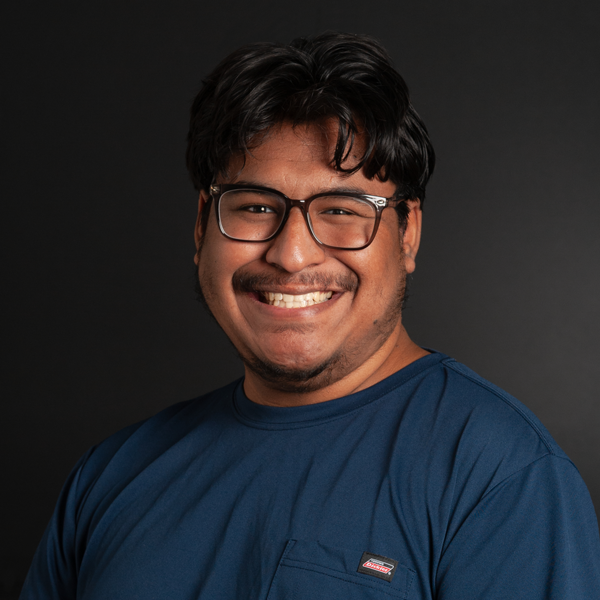

Hello! My name is Erik Menchaca. I have created this website for my professional portfolio in hope to find a co-op, internship, or a full-time job. I enjoy my academic career, studying Applied Computer Technology with an emphasis on Human-Computer Interaction and Psychology.
Experience
- Rochester Institute of Technology/National Technical Institute of the Deaf, Fall Semester 2021
- I collaborated with an NTID Visual Communication Studies faculty, a senior lecturer, with the consultation of the Web Design course for students pursuing their Associate's Degree.
- Made several Zoom recording demonstrations for all course assignments
- Wrote assignment grading rubrics
- Tutored students taking her course during the semester
- Lectured several presentations/instructions
Education
- Rochester Institute of Technology
- Associate of Applied Science in Mobile Application Development, August 2021 - present
- Georgia Piedmont Technical College
- TCC earned with 3.85 GPA, PC Repair & Network Technician, August 2019 - May 2020
Courses Taken
Previous Project(s)
FW: Writing Seminar — Spring Semester 2025